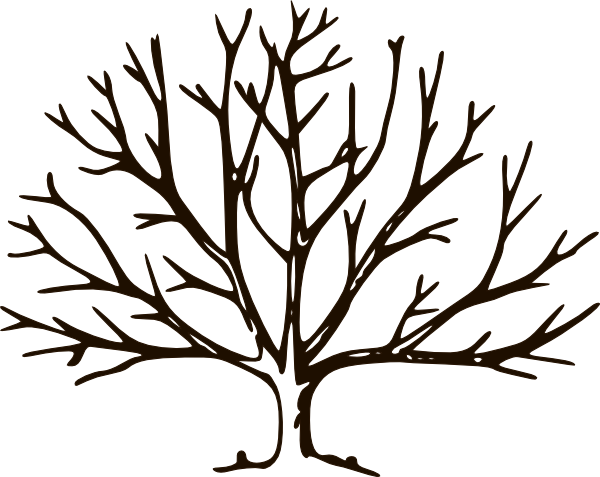
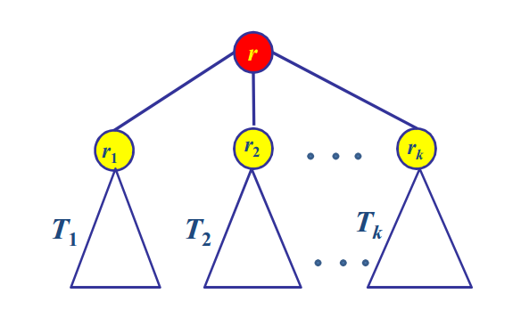

Cây
1 Định nghĩa
1.1 Định nghĩa cây
Cây bao gồm các nút, có một nút đặc biệt gọi là gốc (root) và các cạnh nối các nút. Cây được định nghĩa đệ quy như sau:
Định nghĩa cây:
- Basic step: Một nút r là cây và r được gọi là gốc của cây này.
- Recursive step: Giả sử T1,T2,...,Tk là các cây với gốc là r1, r2, ...,rk. Ta có thể xây dựng cây mới bằng cách đặt r làm cha (parent) của các nút r1, r2, ...,rk. Trong cây này r là gốc và T1,T2,...,Tk là các cây con của gốc r. Các nút r1, r2, ...,rk còn được gọi là con (children) của nút r.
Chú ý: Nhiều khi để phù hợp ta cần định nghĩa cây rỗng (null tree) là cây không có nút nào cả
1.2 Cây trong thực tế
2. Các thuật ngữ
- Nút - node
- Gốc - root
- Lá - leaf
- Con - child
- Cha - Parent
- Tổ tiên - ancestors
- Hậu duệ - descendants
- Anh em - sibling
- Nút trong - internal node
- Chiều cao - higth
- Chiều sâu - depth
Các thuật ngữ với cây có gốc
- Đường đi
- Độ cao(height) & độ sâu(depth)
- Bậc (degree)
3. Cây có thứ tự

4. Cây có nhãn
Thông thường người ta gán cho mỗi nút của cây một nhãn(label) hoặc một giá trị, cũng tương tự như chúng ta đã gán mỗi nút của danh sách với một phần tử. Nghĩa là, nhãn của nút không phải là tên gọi của nút mà là giá trị được cất giữ trong nó. Trong một số ứng dụng ta có thể thay đổi nhãn của nút mà tên của nó vẫn giữ nguyên.
5. ADT cây

typedef struct Node{
int value;
struct Node* leftMostChild;
struct Node* rightSibling;
};
Node *root;
Tạo một node
Node* MakeNode(int x){
Node* P=(Node*) malloc(sizeof(Node));
P->value=x;
P->leftMostChild=NULL;
P->rightSibling=NULL;
return P;
}
Tìm kiếm node
Node* find ( Node* r , int v){
if (r == NULL) return NULL;
if (r−>id == v) return r;
Node* p = r−>leftMostChild;
while(p!=NULL){
Node* pv = find(p ,v);
if(pv != NULL) return pv;
p = p−>rightSibling;
}
return NULL;
}
Đếm số node
int count(Node* r){
if (r == NULL) return 0;
int c = 1;
Node *P = r->leftMostChild;
while(p!=NULL){
int cp = count(p);
c += cp;
p = p->rightSibling;
}
return c;
}
Chiều cao của cây
int height(Node *p){
if (p==NULL) return 0;
int h=0;
Node* pi = p->leftMostChild;
while(pi != NULL){
int hi = height(pi);
h = h > hi ? h : hi;
pi = pi->rightSibling;
}
return h+1;
}
Tìm cha của một node
Node* parent(Node* r, Node* p){
if (r == NULL) return NULL;
Node* q=r->leftMostChild;
while(q != NULL){
if (q == p) return r;
Node* h = parent(q,p);
if (h != NULL) return h;
q = q->rightSibling;
}
return NULL;
}
Thêm một node mới vào cuối danh sách các node con của một node
Thêm node có value=v vào cuối danh sách các node con của p
Node* parent(Node* p, int v){
Node* pv = MakeNode(v);
Node* pi = p->leftMostChild;
if (pi == NULL){
p->leftMostChild = pv;
}
else{
while(pi->rightSibling != NULL){
pi = pi->rightSibling;
}
pi->rightSibling = pv;
}
}
6. Cây nhị phân
6.1 Định nghĩa & tính chất
Định nghĩa
Cây nhị phân là cây mà mỗi nút có nhiều nhất hai con.
- Vì mỗi nút chỉ có không quá hai con nên ta sẽ gọi chúng là con trái và con phải (left and right child)
- Như vậy mỗi nút của cây nhị phân hoặc là không có con, hoặc chỉ có con phải ,hoặc chỉ có con trái, hoặc có cả con phải và con trái

1.2 Tính chất
6.2 Biểu diễn cây nhị phân
6.1 Sử dụng mảng
6.2 Sử dụng con trỏ

typedef struct Node{
int value;
struct Node* left;
struct Node* right;
};
Node *root;
6.3 Duyệt cây nhị phân
3.1 Duyệt theo Node - Left - Right (NLR):
Duyệt node gốc, duyệt node trái, duyệt node phải.

void NLR(Node* root){
if (root != NULL){
printf("%d \t", root->value);
NLR(root->left);
NLR(root->right);
}
}
3.2 Duyệt theo Left - Node - Right (LNR) :
Xuất ra giá trị tăng dần trong cây nhị phân tìm kiếm.

void LNR(Node* root){
if (root != NULL){
LNR(root->left);
printf("%d \t", root->value);
LNR(root->right);
}
}
3.3 Duyệt theo Left - Right - Node (LRN):
Xuất ra giá trị giảm dần trong cây nhị phân tìm kiếm.

void LRN(Node* root){
if (root != NULL){
LRN(root->left);
LRN(root->right);
printf("%d \t", root->value);
}
}